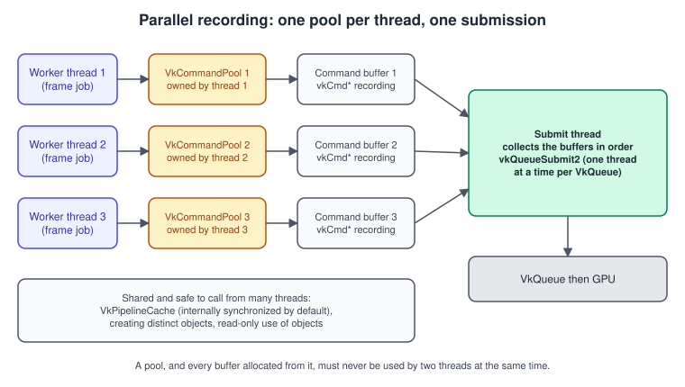
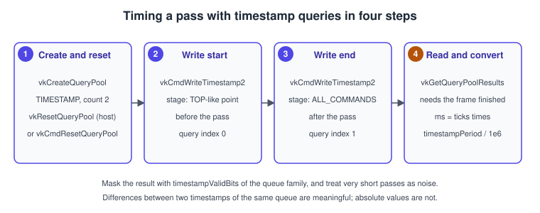
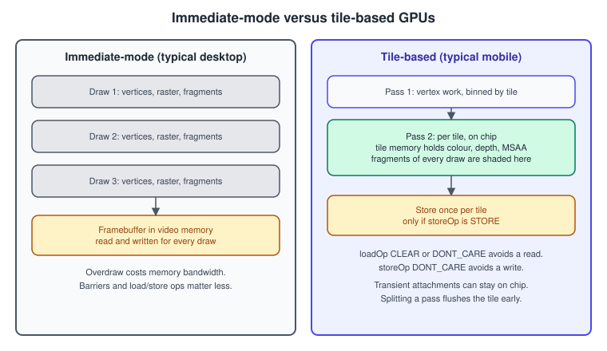

Multithreading and Performance in Vulkan
|
This content was generated with the assistance of AI and should be verified against the official documentation before being relied on in production. |
Vulkan was designed so that the work the CPU does for a frame can be spread over several threads. The driver does not add its own locks behind your back: it tells you, command by command, which parameters you must protect and leaves the rest to you. In return a renderer can record thousands of draw calls on many cores, compile pipelines in the background and still submit in a single predictable place. Threads only help the host side, though. The GPU executes what you submit in the order and with the dependencies you describe, so a faster recording path improves frame time only when the CPU was the bottleneck, and finding out which side is the bottleneck is what the second half of this page is about: timestamps, queries, the behaviour of tile-based GPUs and the profilers.
The facts were checked in November 2026. The page documents Vulkan 1.4 (headers 1.4.3xx, LunarG SDK 1.4.363.0); everything used by the code is core in Vulkan 1.3, so it works on the Vulkan 1.3 minimum of the running example. Extensions are named where they matter and the page says when one is not available everywhere. The code is C++20 with Vulkan-Hpp RAII for the threading examples and the plain C API for the query and cache examples, which shows exactly which entry points are called. A Vulkan Bookshelf frame has about thirty draw calls, so it does not need threads to run fast; the techniques below are the ones you adopt when the shelf grows into the many-book scene and the game of Bookshelf, Part 2: Scene and Game. The basic objects are in Queues and Command Buffers, the C++ threading primitives used here are in Threads and Synchronization and the general CPU and GPU performance method is in Performance and Profiling. Apple’s equivalent discussion is in Metal Performance Best Practices.
The threading model
The Vulkan specification has a section called Threading Behavior. Its rule is simple: any command may be called from any thread, but every parameter marked as externally synchronized must be used by at most one thread at a time. The caller provides the mutual exclusion. Violating it is a data race, which is undefined behaviour that the validation layer can often detect (see Validation and Debug Utils).

The objects and parameters that matter most in practice are these:
| Object or parameter | Rule | Consequence |
|---|---|---|
|
Externally synchronized for destroying, resetting, trimming and freeing buffers, and implicitly whenever a command buffer allocated from it is begun, ended, reset or recorded into. |
One pool per recording thread (and per frame in flight). Never share a pool, even when the threads record different buffers. |
|
The |
A buffer can be recorded by one thread at a time. It may be created on one thread and recorded on another, as long as the hand-over is ordered. |
|
The |
Submit from one thread, or protect each queue with a mutex. Two different queues can be used by two threads without any lock. |
|
Most commands that take a device (creating buffers, images, pipelines and so on) can run concurrently on distinct objects. |
Stop all threads before destroying the device. |
|
The |
A sub-allocator such as VMA takes its own locks for this reason; see Memory Heaps, Types and VMA. |
|
Allocating and freeing sets from one pool, and updating one set, must not overlap with another use of the same pool or set. |
Give each thread its own descriptor pool, and never update a set the GPU still reads (unless update-after-bind is used, see Bindless Descriptors). |
|
Internally synchronized by default. Externally synchronized only if it was created with the externally-synchronized flag (see below). |
One shared cache can be used by every pipeline-creation thread without a lock. |
Two further facts complete the picture. Using an object from the GPU side is covered by synchronization commands and not by
host locks: a resource that is still referenced by a submitted command buffer must not be destroyed or modified until the
fence or timeline value says the work is done. And VK_KHR_internally_synchronized_queues (a ratified extension that
requires Vulkan 1.1) adds the queue creation flag VK_DEVICE_QUEUE_CREATE_INTERNALLY_SYNCHRONIZED_BIT_KHR and a feature
struct. A queue created with that flag no longer needs the external synchronization described above. It is new, so check
support with vulkaninfo before relying on it; a mutex around vkQueueSubmit2 remains the portable choice.
Recording in parallel
The unit of parallel recording is the command buffer, and the unit of isolation is the command pool. A typical frame splits the scene into chunks (a range of draw calls, a render pass, a shadow cascade), gives each chunk to a worker, and collects the finished buffers in order for one submission.
Pools per thread and per frame
Command pools own the memory that command buffers record into, so resetting a pool recycles every buffer allocated from it in a
single call. Create one pool per thread and per frame in flight, record into it during the frame, and call vkResetCommandPool
once the GPU has finished that frame (the fence or timeline wait of
Timeline Semaphores and Frames in Flight). That is cheaper
than resetting buffers one by one and avoids the free-and-reallocate churn of short-lived buffers.
Pool creation flags control this behaviour:
| Flag | Meaning | When to use it |
|---|---|---|
none |
Buffers cannot be reset individually; reset the whole pool. |
The default choice for per-frame pools. |
|
Hints that buffers are short-lived and re-recorded often, so the implementation can choose its allocation strategy. |
Per-frame pools. |
|
Allows |
Long-lived buffers that are re-recorded individually. It can be slower than resetting the pool. |
|
Buffers can use protected memory. |
DRM content only. |
A complete parallel-recording example
The example records the Bookshelf’s draw calls on several threads, each with its own pool, then submits once. It uses secondary
command buffers because dynamic rendering lets a render pass be split over secondary buffers when the begin call asks for it
(VK_RENDERING_CONTENTS_SECONDARY_COMMAND_BUFFERS_BIT). The primary buffer begins and ends the rendering; the workers only
record draws.
#include <vulkan/vulkan_raii.hpp>
#include <functional>
#include <thread>
#include <vector>
struct WorkerFrame {
vk::raii::CommandPool pool; // owned by exactly one thread
vk::raii::CommandBuffers secondary; // allocated from `pool`
};
WorkerFrame makeWorkerFrame(const vk::raii::Device& device, uint32_t queueFamily) {
vk::CommandPoolCreateInfo poolInfo{vk::CommandPoolCreateFlagBits::eTransient, queueFamily};
vk::raii::CommandPool pool{device, poolInfo};
vk::CommandBufferAllocateInfo alloc{*pool, vk::CommandBufferLevel::eSecondary, 1};
vk::raii::CommandBuffers buffers{device, alloc};
return {std::move(pool), std::move(buffers)};
}
// Each worker records a slice of the draw list into its own secondary buffer.
void recordSlice(vk::raii::CommandBuffer& cmd,
const vk::CommandBufferInheritanceRenderingInfo& inheritRendering,
vk::Pipeline pipeline, vk::PipelineLayout layout,
vk::DescriptorSet set, std::span<const DrawItem> draws) {
vk::CommandBufferInheritanceInfo inherit{};
inherit.pNext = &inheritRendering; // formats must match the primary's vkCmdBeginRendering
vk::CommandBufferBeginInfo begin{vk::CommandBufferUsageFlagBits::eOneTimeSubmit
| vk::CommandBufferUsageFlagBits::eRenderPassContinue,
&inherit};
cmd.begin(begin);
cmd.bindPipeline(vk::PipelineBindPoint::eGraphics, pipeline);
cmd.bindDescriptorSets(vk::PipelineBindPoint::eGraphics, layout, 0, set, {});
for (const DrawItem& d : draws) {
cmd.bindVertexBuffers(0, d.vertexBuffer, vk::DeviceSize{0});
cmd.bindIndexBuffer(d.indexBuffer, 0, vk::IndexType::eUint32);
cmd.pushConstants<Mat4>(layout, vk::ShaderStageFlagBits::eVertex, 0, d.model);
cmd.drawIndexed(d.indexCount, 1, 0, 0, 0);
}
cmd.end();
}
void recordFrame(const vk::raii::Device& device, vk::raii::CommandBuffer& primary,
std::vector<WorkerFrame>& workers, const FrameContext& ctx) {
const size_t n = workers.size();
std::vector<std::jthread> threads;
for (size_t i = 0; i < n; ++i) {
threads.emplace_back([&, i] {
auto slice = ctx.sliceFor(i, n); // contiguous range of draws
recordSlice(workers[i].secondary[0], ctx.inheritRendering, ctx.pipeline,
ctx.layout, ctx.set, slice);
});
}
threads.clear(); // jthread joins on destruction
primary.begin({vk::CommandBufferUsageFlagBits::eOneTimeSubmit});
// ... barrier2 to COLOR_ATTACHMENT_OPTIMAL (see Synchronization) ...
vk::RenderingInfo rendering = ctx.renderingInfo;
rendering.flags = vk::RenderingFlagBits::eContentsSecondaryCommandBuffers;
primary.beginRendering(rendering);
std::vector<vk::CommandBuffer> secondaries;
for (auto& w : workers) secondaries.push_back(*w.secondary[0]); // keep the draw order
primary.executeCommands(secondaries);
primary.endRendering();
// ... barrier2 to PRESENT_SRC_KHR ...
primary.end();
}Points to check when this does not work:
-
A secondary buffer recorded inside a render pass needs the render-pass-continue usage flag, and with dynamic rendering the inheritance info is a
VkCommandBufferInheritanceRenderingInfoin thepNextchain whose attachment formats, sample count and view mask match thevkCmdBeginRenderingcall that will execute it. -
When the primary begins rendering with the secondary-contents flag, it may record only
vkCmdExecuteCommandsbetween begin and end. Mixing inline draws and secondary buffers in one rendering instance is not allowed; use a secondvkCmdBeginRenderingfor inline work, or suspend and resume the instance across buffers. -
Pass the secondaries to
vkCmdExecuteCommandsin the order that preserves your intended draw order, especially with blending. -
The
jthreaddestructors join, which is why clearing the vector is a barrier here. A thread pool with a job counter is the usual production form; see Async, Futures and Atomics.
Secondary buffers or several primary buffers
Splitting a render pass between primary buffers is not possible, because a rendering instance lives in one command buffer (unless you use the suspend and resume flags, which let rendering span several buffers submitted together). That leaves two shapes:
| Shape | Good for | Cost |
|---|---|---|
One primary buffer per pass or per large chunk of passes, recorded in parallel, submitted together. |
Shadow cascades, a geometry pass and a UI pass that are independent, compute passes. |
None beyond the barriers between passes. This is the shape to prefer. |
Secondary buffers executed from one primary inside a single rendering instance. |
A single pass with a very large draw list, such as the main colour pass of a big scene. |
Executing a secondary buffer has overhead on some drivers, and on tile-based GPUs a secondary buffer can limit what the driver can merge. Measure before adopting it. |
Older guides built around Vulkan 1.0 used secondary buffers as the only way to parallelize a render pass, because the render pass object lived in the primary buffer. With dynamic rendering (core in Vulkan 1.3, see Dynamic Rendering) the same technique works with the inheritance structure shown above, and the cheaper pattern of recording several primary buffers for separate passes is available.
Submitting from one place
Submission is the point where the work is handed to the driver, and it is the point most worth keeping serial and simple:
-
Collect the finished primary buffers into the
pCommandBufferInfosarray of oneVkSubmitInfo2and callvkQueueSubmit2once per queue per frame. Each call has a fixed cost, so ten submits of one buffer are slower than one submit of ten buffers. -
Do the waits and signals (swapchain semaphore, timeline value) on that one call. The details are in Synchronization and sync2.
-
Do not call
vkQueueWaitIdleorvkDeviceWaitIdlein the frame loop; they empty the pipeline between CPU and GPU. -
Use one thread (or one mutex) per queue. If you use an async compute or transfer queue, give it its own submission path so uploads do not stall behind the graphics submit.
Pipeline caches and background compilation
Creating a pipeline compiles shaders, which is expensive and can cost milliseconds per pipeline. Two features reduce the cost: the pipeline cache saves compiled results and lets you load them on the next run, and creating pipelines on worker threads keeps the work off the frame loop.
The pipeline cache
A VkPipelineCache is passed to every pipeline-creation call. The driver looks up the pipeline in the cache and stores new
results there. The cache can be serialized with vkGetPipelineCacheData and given back at the next start through the
pInitialData field of VkPipelineCacheCreateInfo.
The returned blob begins with a standard header, VkPipelineCacheHeaderVersionOne:
| Field | Type | Meaning |
|---|---|---|
|
|
Length of the header, including the UUID. |
|
|
|
|
|
Equals |
|
|
Equals |
|
|
Equals |
Drivers validate this header and ignore data that does not match, so a stale file after a driver update is harmless, but you should compare the header yourself to avoid reading corrupt files and to decide when to delete them. Add your own checksum and version number around the blob: a truncated or bit-flipped file passed to a driver is a robustness risk you can avoid for free.
#include <vulkan/vulkan.h>
#include <cstdint>
#include <cstring>
#include <fstream>
#include <iterator>
#include <vector>
std::vector<uint8_t> readFile(const char* path) {
std::ifstream f(path, std::ios::binary);
return {std::istreambuf_iterator<char>(f), {}};
}
bool headerMatches(const std::vector<uint8_t>& blob, const VkPhysicalDeviceProperties& props) {
if (blob.size() < sizeof(VkPipelineCacheHeaderVersionOne)) return false;
VkPipelineCacheHeaderVersionOne h;
std::memcpy(&h, blob.data(), sizeof h);
return h.headerSize >= sizeof h
&& h.headerVersion == VK_PIPELINE_CACHE_HEADER_VERSION_ONE
&& h.vendorID == props.vendorID
&& h.deviceID == props.deviceID
&& std::memcmp(h.pipelineCacheUUID, props.pipelineCacheUUID, VK_UUID_SIZE) == 0;
}
VkPipelineCache loadCache(VkDevice device, const VkPhysicalDeviceProperties& props, const char* path) {
std::vector<uint8_t> blob = readFile(path);
VkPipelineCacheCreateInfo info{VK_STRUCTURE_TYPE_PIPELINE_CACHE_CREATE_INFO};
if (headerMatches(blob, props)) {
info.initialDataSize = blob.size();
info.pInitialData = blob.data();
}
VkPipelineCache cache = VK_NULL_HANDLE;
vkCreatePipelineCache(device, &info, nullptr, &cache);
return cache;
}
void saveCache(VkDevice device, VkPipelineCache cache, const char* path) {
size_t size = 0;
vkGetPipelineCacheData(device, cache, &size, nullptr); // first call: size
std::vector<uint8_t> blob(size);
vkGetPipelineCacheData(device, cache, &size, blob.data()); // second call: data
blob.resize(size);
std::ofstream(path, std::ios::binary).write(reinterpret_cast<const char*>(blob.data()), size);
}Practical advice:
-
Use one cache per application (or per device) and save it on exit and now and then during long sessions. Write to a temporary file and rename, so a crash does not leave half a file.
-
Per-thread caches avoid contention only if the cache is externally synchronized; with the default internally synchronized cache one shared object is fine. Several caches can be combined with
vkMergePipelineCaches. -
A cache helps only for pipelines the driver has already compiled with the same shaders and state. For your first launch the only remedy is to compile ahead of time, for example during a loading screen.
-
Cache files are device-specific. Do not ship them to players; ship the list of pipelines to build and build them on the player’s machine. Platform-wide shader caches (the driver’s own) are separate and are not under your control.
Creating pipelines on worker threads
Pipelines can be created concurrently with vkCreateGraphicsPipelines and vkCreateComputePipelines from any thread, passing
the same cache. Creating many in one call lets the driver spread them over its internal compiler threads. Vulkan 1.3 promoted
the pipeline creation cache control feature, which adds these tools:
| Option | Effect |
|---|---|
|
Declares that you synchronize the cache yourself, which can remove internal locking in the driver. Needs the |
|
The call fails with |
|
In a multi-pipeline call, stop at the first failure instead of attempting the rest. |
The pattern is: on the render thread try to create the pipeline with the fail-on-compile-required bit; if it succeeds you have it
at cache-lookup cost; if it returns VK_PIPELINE_COMPILE_REQUIRED, hand the creation to a background worker and draw with a
simpler pipeline meanwhile. For state combinations that explode in number, pipeline libraries and shader objects (see
Dynamic State, Shader Objects and Pipeline Libraries)
remove most of the compile cost at draw time.
Creation feedback
VkPipelineCreationFeedbackCreateInfo (core in Vulkan 1.3) chains onto the create info and returns, for the pipeline and each
stage, a VkPipelineCreationFeedback with flags and a duration in nanoseconds:
VkPipelineCreationFeedback total{};
VkPipelineCreationFeedback stages[2]{};
VkPipelineCreationFeedbackCreateInfo feedback{VK_STRUCTURE_TYPE_PIPELINE_CREATION_FEEDBACK_CREATE_INFO};
feedback.pPipelineCreationFeedback = &total;
feedback.pipelineStageCreationFeedbackCount = 2;
feedback.pPipelineStageCreationFeedbacks = stages;
VkGraphicsPipelineCreateInfo info{VK_STRUCTURE_TYPE_GRAPHICS_PIPELINE_CREATE_INFO};
info.pNext = &feedback; // chain next to dynamic rendering info, if any
// ... fill stages, state, layout ...
vkCreateGraphicsPipelines(device, cache, 1, &info, nullptr, &pipeline);
const bool valid = total.flags & VK_PIPELINE_CREATION_FEEDBACK_VALID_BIT;
const bool hit = total.flags & VK_PIPELINE_CREATION_FEEDBACK_APPLICATION_PIPELINE_CACHE_HIT_BIT;
// total.duration is in nanoseconds; log slow or missed pipelinesLog pipelines with a cache miss and a long duration, and use the list as the pre-compile set for the next release.
Queries and timestamps
A VkQueryPool holds the results of a set of queries of one type. The type is chosen at creation and the pool is then used with
the matching commands.
| Query type | What it returns | Needs |
|---|---|---|
|
A GPU clock value written at a point in the command stream. |
A queue family with a non-zero |
|
The number of samples that passed the depth and stencil tests between begin and end. |
Graphics queue; |
|
Counters such as vertex shader invocations and fragment shader invocations, chosen with a bitmask. |
The |
Other types |
Transform feedback, performance counters, acceleration structure sizes, video encode feedback, mesh primitives generated and others. |
Their extensions. |
Reset, write, read
A query must be reset before it is used. Vulkan 1.2 added vkResetQueryPool, which resets on the host without recording a
command and needs the hostQueryReset feature; vkCmdResetQueryPool does it in a command buffer, outside a render pass.
Results are read on the host with vkGetQueryPoolResults or copied into a buffer with vkCmdCopyQueryPoolResults. Request
64-bit results with VK_QUERY_RESULT_64_BIT; wait for availability with VK_QUERY_RESULT_WAIT_BIT, or add
VK_QUERY_RESULT_WITH_AVAILABILITY_BIT to poll without blocking.
Timing a pass with timestamps
vkCmdWriteTimestamp2 (core in Vulkan 1.3, the sync2 successor of vkCmdWriteTimestamp) writes the GPU time when the
commands before it have passed the chosen stage. Two timestamps bracket a pass. The raw value is in device ticks; multiply the
difference by VkPhysicalDeviceLimits::timestampPeriod (nanoseconds per tick) to get time. Only the lowest
timestampValidBits of the value are meaningful, so mask before subtracting.

#include <vulkan/vulkan.h>
#include <cstdint>
struct GpuTimer {
VkQueryPool pool = VK_NULL_HANDLE;
float periodNs = 1.0f;
uint32_t validBits = 64;
void create(VkDevice device, const VkPhysicalDeviceProperties& props, uint32_t validBitsOfFamily) {
VkQueryPoolCreateInfo info{VK_STRUCTURE_TYPE_QUERY_POOL_CREATE_INFO};
info.queryType = VK_QUERY_TYPE_TIMESTAMP;
info.queryCount = 2;
vkCreateQueryPool(device, &info, nullptr, &pool);
periodNs = props.limits.timestampPeriod;
validBits = validBitsOfFamily; // from VkQueueFamilyProperties
}
// Host reset (core 1.2, needs hostQueryReset); call once the previous result was read.
void reset(VkDevice device) { vkResetQueryPool(device, pool, 0, 2); }
void begin(VkCommandBuffer cmd) {
vkCmdWriteTimestamp2(cmd, VK_PIPELINE_STAGE_2_ALL_COMMANDS_BIT, pool, 0);
}
void end(VkCommandBuffer cmd) {
vkCmdWriteTimestamp2(cmd, VK_PIPELINE_STAGE_2_ALL_COMMANDS_BIT, pool, 1);
}
// Call after the frame's fence or timeline value has signalled.
double readMilliseconds(VkDevice device) {
uint64_t t[2] = {};
VkResult r = vkGetQueryPoolResults(device, pool, 0, 2, sizeof t, t, sizeof(uint64_t),
VK_QUERY_RESULT_64_BIT);
if (r != VK_SUCCESS) return -1.0; // VK_NOT_READY: not finished yet
const uint64_t mask = validBits >= 64 ? ~0ull : ((1ull << validBits) - 1);
const uint64_t ticks = ((t[1] & mask) - (t[0] & mask)) & mask; // handles wrap-around
return double(ticks) * double(periodNs) * 1e-6;
}
};Advice for useful numbers:
-
Use one query pair per frame in flight, read the pair that belongs to a frame that has finished (not the one being recorded), and average over many frames.
-
A timestamp measures when the stage was reached, not when a draw was fully executed in isolation. The GPU overlaps consecutive passes, so a pass can look cheaper or more expensive depending on the barrier between it and its neighbours. Wide stage masks such as all-commands make the measurement simple but also impose extra waiting; for fine-grained timing use the stage that matches the work (fragment shader output for a colour pass).
-
The values of different queues are not comparable. For timelines that include the CPU, calibrated timestamps (
VK_KHR_calibrated_timestamps, where supported) relate the device clock to host clocks. -
Write timestamps between passes rather than inside a rendering instance; on tile-based GPUs, which the next section describes, inside a pass they can interfere with the work being measured.
-
Debug labels with
VK_EXT_debug_utils(see Validation and Debug Utils) name the same regions in a profiler without any query code at all.
Older Vulkan 1.0 guides use vkCmdWriteTimestamp with TOP_OF_PIPE and BOTTOM_OF_PIPE stage bits and reset only inside
command buffers. Both still work, but the 2 variant takes the 64-bit stage flags of synchronization2, and the top-of-pipe and
bottom-of-pipe stages are considered legacy in favour of a precise stage or all-commands.
Occlusion and pipeline statistics
An occlusion query brackets draws with vkCmdBeginQuery and vkCmdEndQuery; the result is the number of samples that passed.
A zero or small result means a bounding box is hidden, which is the basis of GPU culling by occlusion. Without the precise bit
the result may be any non-zero value when some samples pass, which is enough for a yes-or-no decision. Pipeline statistics queries
count invocations for the stages you select; they are a diagnostic tool (for example to learn how many triangles survived
clipping) and are not available on every implementation, so check pipelineStatisticsQuery. With mesh shading there is a separate
query type for primitives generated.
Tile-based GPUs
Most phones and tablets, and Apple GPUs, render in two phases: the geometry of the whole pass is processed and binned by screen tile, then each tile is shaded entirely in fast on-chip memory and written to video memory once. Desktop GPUs are mostly immediate-mode and write each draw’s pixels to memory as they go, although some use tiling tricks internally. Vulkan is meant to run well on both, and the choices that matter on a tiler are made in the way you describe attachments and barriers.

The Khronos Vulkan Guide collects these practices; the main ones are:
| Practice | Why it matters | How in Vulkan 1.3 / dynamic rendering |
|---|---|---|
Use |
|
|
Use |
Skips the write-back of the tile. |
|
Give single-pass attachments |
The image may never get physical memory on a tiler, because it lives only in tile memory. Typical for depth and G-buffer data used within one pass. |
Pick a memory type with the lazily-allocated flag; fall back to device-local if none exists. |
Resolve multisampled colour in the same rendering instance. |
The resolve happens on chip. |
|
Keep a rendering instance whole; avoid barriers and descriptor writes that force it to be split. |
Every split flushes tiles to memory and reloads them. |
Order work so that passes that feed each other are separate and passes that do not are not interleaved. |
Use the narrowest pipeline stages and access masks in barriers. |
|
|
Read the current pixel’s attachments from a later draw in the same pass with local read. |
Replaces the multi-subpass input-attachment pattern without leaving the tile. |
|
The following snippet shows the attachment setup of a depth-tested colour pass with a resolve, written for a tiler:
vk::RenderingAttachmentInfo color{};
color.imageView = *msaaColorView; // created with TRANSIENT_ATTACHMENT usage
color.imageLayout = vk::ImageLayout::eColorAttachmentOptimal;
color.loadOp = vk::AttachmentLoadOp::eClear;
color.storeOp = vk::AttachmentStoreOp::eDontCare; // only the resolved image is needed
color.clearValue = vk::ClearValue{vk::ClearColorValue{std::array<float, 4>{0.05f, 0.05f, 0.07f, 1.0f}}};
color.resolveMode = vk::ResolveModeFlagBits::eAverage;
color.resolveImageView = swapchainView;
color.resolveImageLayout = vk::ImageLayout::eColorAttachmentOptimal;
vk::RenderingAttachmentInfo depth{};
depth.imageView = *depthView; // transient, lazily allocated where available
depth.imageLayout = vk::ImageLayout::eDepthAttachmentOptimal;
depth.loadOp = vk::AttachmentLoadOp::eClear;
depth.storeOp = vk::AttachmentStoreOp::eDontCare; // not read after the pass
depth.clearValue = vk::ClearValue{vk::ClearDepthStencilValue{0.0f, 0}}; // reversed-Z
vk::RenderingInfo info{{}, vk::Rect2D{{0, 0}, extent}, 1, 0, color, &depth};
cmd.beginRendering(info);Another tool is VK_EXT_shader_tile_image, which exposes the current pixel’s tile data to fragment shaders for programmable
blending; it covers only the current pixel, so filters that sample neighbours still need separate passes. Check the extension in
vulkaninfo before designing around it. The Metal counterpart of these ideas is described in
Metal Render Passes and Load/Store Actions and the general hardware picture in
GPU Architecture Basics. Android specifics (pre-rotation, frame pacing) are in
Vulkan on Android.
Common mistakes
-
Sharing one
VkCommandPoolbetween threads "because the buffers are different". The pool is the shared object. -
Resetting a pool or freeing a buffer that the GPU still executes. Wait on the fence or timeline value first.
-
Allocating and freeing command buffers every frame instead of resetting a pool.
-
Calling
vkQueueWaitIdleorvkDeviceWaitIdleafter each frame to be "safe". -
Creating a pipeline on the render thread in the middle of a frame without a cache, causing a hitch the first time an object appears.
-
Never saving the pipeline cache, or saving it without checking the header and a checksum.
-
Timing with the host clock around
vkQueueSubmit2, which measures only the CPU cost of recording the submit. -
Reading a timestamp result before the frame finished and treating
VK_NOT_READYas zero. -
Using wide barrier stage masks everywhere and then wondering why passes do not overlap.
-
Optimizing the CPU side when the GPU is the bottleneck, or the reverse. Measure first.
Finding the bottleneck with profilers
A profiler tells you whether the frame is limited by the CPU (recording, submission, driver work) or by the GPU, and which passes or draws dominate. The Vulkan Guide’s profiling chapter lists these tools:
| Tool | Vendor and platform | Use it for |
|---|---|---|
RenderDoc |
Open source, multi-platform |
Per-draw timings and overdraw. Its timings ignore overlap between draws, so they are less accurate than hardware counters; use them to find the heavy pass, not to measure it precisely. See Debugging and Capture Tools. |
NVIDIA Nsight Systems |
NVIDIA |
System-wide timeline: CPU threads, submissions, CPU and GPU synchronization problems. |
NVIDIA Nsight Graphics |
NVIDIA GPUs |
GPU frame profiling: shader performance, hardware unit utilization, memory analysis. |
AMD Radeon GPU Profiler (RGP) |
AMD Radeon GPUs |
Detailed GPU timeline of how command buffers execute and where hardware stalls occur. |
Android GPU Inspector (AGI) |
Google, Android |
Vulkan API tracing and system trace correlation on Android devices. |
Arm Streamline in Arm Mobile Studio |
Arm-based devices |
CPU, GPU and system metrics on mobile. |
Qualcomm Snapdragon Profiler |
Adreno GPUs |
GPU metrics, API trace and shader profiling on Snapdragon devices. |
Imagination PVRTune |
PowerVR GPUs |
Real-time hardware analysis for tile-based architectures. |
A repeatable method:
-
Measure CPU frame time (the time between two presents) and GPU frame time (timestamps around the whole frame). If the GPU time is lower than the frame time, the CPU or presentation is the limit. See Game Loop and Frame Timing for the pacing side.
-
If the GPU dominates, split the GPU time per pass with timestamps or a vendor profiler, then look inside the heaviest pass for shader cost, bandwidth or overdraw.
-
If the CPU dominates, look at the system timeline for time spent in
vkQueueSubmit2, in descriptor updates, in pipeline creation and in lock contention, and then apply the threading techniques above. -
Change one thing, measure again on the slowest target device, and keep the numbers.
-
Turn validation and debugging layers off for performance measurements; they add a large cost on purpose.
Where older guides are out of date
| Older statement (Vulkan 1.0 era) | Today |
|---|---|
Queries are reset only with |
|
Secondary command buffers are the way to split a render pass among threads. |
Still valid, and with dynamic rendering the inheritance structure is a |
Subpasses and input attachments are the tiler-friendly way to keep data on chip. |
Dynamic rendering local read (core in Vulkan 1.4) provides it without render pass objects. |
The pipeline cache is a plain optimization. |
It is also the base for creation control: externally synchronized caches, fail-on-compile-required and creation feedback are core in 1.3. |
Queue access must always be guarded by the application. |
Still the default; |
Profiling means a vendor tool on a desktop GPU. |
Tools exist for every major mobile vendor, and GFXReconstruct captures can be replayed headless in continuous integration for repeatable measurements. |